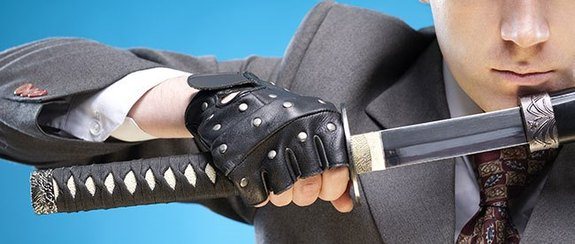

|
Tra i vari autori di libri che sono diventati testi di studio per futuri amministratori uno non manca mai.
L’arte della guerra di Sun Tzu, infatti Il libro può essere considerato un vero e proprio manuale sulla gestione d’impresa.
Lo sviluppo di nuovi paradigmi all'interno dell'impresa, hanno reso un testo di 2.500 anni fa a noi vicino.
Il testo segue le operazioni militari del saggio comandante e nonostante il comportamento del comandante possa apparire inimitabile,
ognuna delle sue qualità è presente in ciascuno di noi e ciascuna delle sue decisioni è alla nostra portata.
Il libro è stato scritto per trasmettere saggezza da utilizzarsi in ogni circostanza: nel caso in cui un piccolo esercito debba
fronteggiarne uno più grande o nel caso in cui un imprenditore debba risolvere problemi nati all’interno della propria impresa.
Il saggio comandante è sempre se stesso, è sempre a suo agio in ogni situazione, è sempre sereno e trasmette la sua serenità alle persone che gli sono accanto.
Egli valuta gli scenari, per ogni situazione, è in grado di individuare le risposte più appropriate per “conquistare intero e intatto il nemico”.
Le risposte non devono mai essere le stesse ma devono essere congruenti alla situazione reale in quel momento, proprio come un buon imprenditore deve fare.
La lotta nell’arena competitiva è di vitale importanza per ogni impresa; è impossibile poter gestire la propria impresa senza elaborare una strategia che porti a conquistare una fetta di mercato. La strategia è infatti quell'insieme di scelte e azioni ritenute idonee, in relazione ovviamente ai mezzi e alle risorse disponibili, attraverso le quali l'impresa persegue una posizione di leadership. Valutare la situazione per mezzo di comparazioni Per capire la sua vera natura. Il primo fattore è il Tao, il secondo il cielo, il terzo è la terra il quarto è il generale, il quinto è il metodo. Il Tao è ciò che induce il popolo a condividere lo stesso obiettivo del governante. […] Il generale rappresenta la conoscenza, la fedeltà, il coraggio, la severità e l’umanità. Il metodo riguarda il saper dare ordini, è il Tao dell’organizzazione dell’esercito e della logistica. Riguardo a questi cinque fattori,nessun generale non ne ha mai sentito parlare. Colui che li conosce sarà vittorioso. Colui che non li conosce sarà sconfitto.” il Tao può essere paragonato alla mission di un’impresa, missione che deve essere condivisa da tutti i dipendenti che, con le loro aspirazioni, azioni e comportamenti, mostrano di essere in sintonia con l’imprenditore e i vari responsabili. La missione infatti è il modo in cui l’impresa comunica all’esterno in che cosa vuole essere identificata e quale immagine vuole offrire di sé e dei suo prodotti. Cielo e terra rappresentano le condizioni ambientali entro le quali l’impresa si trova a competere; rappresentano la necessità di fare riferimento a leggi e soggetti istituzionali, rappresentano limiti e condizionamenti di ogni tipo, rappresentano la presenza della concorrenza, la maggiore o minore difficoltà nell’aggredire il mercato, la disponibilità o meno di manodopera qualificata. L’imprenditore deve analizzare attentamente le condizioni ambientali entro le quali deve operare e tenerne conto in modo da poter superare gli ostacoli e cogliere le opportunità ovvero quelle occasioni favorevoli che l’impresa deve sfruttare. Il generale simboleggia invece il principio della leadership e le sue qualità principali stanno nella conoscenza e nella ricerca della saggezza. Fedeltà, coraggio, severità e umanità sono doti che non possono mancare a un imprenditore eccellente. Per Sun Tzu il generale è un uomo saggio, uno straordinario esempio di capacità e di buon senso. Un aspetto molto significativo messo in luce da Sun Tzu è la capacità del generale di orientarsi in una situazione di caos. Il caos rappresenta una grande sfida per ogni leader Ma il leader saggio adotta il principio di avere sempre una visione d'insieme e sarà, in grado quindi di prevedere l'ordine che sarà generato dal caos. Sebbene il caos rappresenti una fase difficile da affrontare in ogni ambito, esso è anche una fase di grande creatività e di sviluppo, pertanto, il leader saggio sa trarre vantaggio dalle potenzialità presenti nel caos. Così nell’impresa se un settore entra in crisi saranno solo gli imprenditori più creativi e coraggiosi che non solo sapranno uscire dall'incertezza, ma che anzi ne usciranno più forti e motivati di prima. Un'altra qualità del saggio generale è la rapidità decisionale. Questa consente, infatti, di cogliere il momento nel quale si manifesta il vantaggio e, quindi, di agire con la massima velocità, scardinando ogni tattica che possa avere in mente il nemico. Nello stesso modo l'imprenditore saggio sa cogliere l'opportunità di un vantaggio competitivo,per realizzare con la massima rapidità le azioni necessarie per trasformare il vantaggio competitivo in utili per l'impresa. la conoscenza è la chiave del successo, l’imprenditore che non approfondisce le regole di una buona gestione è destinato alla sconfitta. Sun Tzu si rivolge anche al governante. Il sovrano e il suo generale devono trovarsi in piena sintonia. Il sovrano indica la meta, mentre il generale valuta le condizioni, scegliendo il modo migliore per raggiungere quella meta. Questa unione determina la vittoria. In un’impresa è fondamentale la sintonia perfetta tra chi stabilisce la mission e chi deve individuare i mezzi perché l’impresa operi coerentemente con essa. Bisogna sottolineare che Sun Tzu considera il mondo come un insieme unitario, composto da una moltitudine di aspetti variabili e connessi tra loro. Questa prospettiva è colta esaminando gli elementi che ci sono più vicini, ovvero gli oggetti della vita quotidiana. Essi interagiscono in vari modi, sempre diversi e mutevoli,nel momento in cui riusciamo a dare un senso a queste rappresentazioni possiamo sincronizzare le nostre azioni con esse. Sun Tzu sostiene infatti che tutti gli elementi sono connessi tra loro, bisogna, pertanto, conoscerli uno per uno, sapere come ciascuno agisce e come influenza gli altri; solo allora si può pianificare una strategia.In un’impresa la pianificazione strategica è infatti un processo molto importante, in cui vengono individuati, attraverso un programma di medio/lungo periodo, gli obiettivi e le politiche da perseguire. Abbiamo dunque a che fare con un mondo unitario e compatto,tuttavia possiamo distinguere, al suo interno, le strutture temporanee e mutevoli, ognuna delle quali può rappresentare un momentaneo vantaggio o svantaggio. Ritornando all’impresa, l’analisi di tutti i fattori, tangibili e intangibili, in una visione unitaria, consente al leader il controllo e il successo. Lo shih,rappresenta l’elemento che assicura l’autorità, è una funzione della relazione tra le cose e tra le persone e risiede in una particolare conformazione. Ovviamente cose e persone cambiano e, di conseguenza, anche la configurazione che aveva prodotto lo shih cambia; il leader deve essere in grado, allora, di prevedere come cose e persone cambieranno in modo da poter ricostituire una diversa configurazione che realizzi ancora lo shih. Lo shih del leader d’impresa, si coglie nella sua capacità di osservare il mondo circostante, interpretarne i possibili cambiamenti, creare valore attraverso la cura meticolosa delle relazioni interpersonali, interpretare il proprio ruolo non in base alla forza o alla ricchezza, ma alla capacità di mantenere una costante e fruttuosa sintonia tra cose e persone. Occorre infine ricordare che ne L'arte della guerra il miglior generale è definito quello che vince senza bisogno di combattere. |


©Powered by Samantha Mangeruca